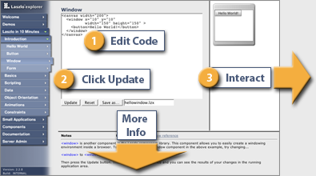

LZX is an event-driven, object-oriented language for building dynamic, data-driven applications. Because it's an XML language, LZX integrates seamlessly with your existing IDE, source control, and team development systems. However, you can to start interacting with the language right here by clicking on the introduction tab in the menu, and start the tour.
You'll be presented with a simple editor with live examples
that you can edit, update, and interact with. Also, checkout
the "Notes" area with links connected to relevant pages within the online
documentation. Enjoy!
